蓝哥 picks · 7/9
新版 Codex 桌面端：值得关注的五个重点
@0xlangeai · 蓝哥AI · Thu Oct 08 02:12:54 +0000 2026
这次 Codex 与 ChatGPT 桌面端更新，有两件事值得一起看：功能更能接手实际工作，套餐的价格与用量安排也变了。
GPT-6.1 Sol 带来更低的 API (a way for programs to talk to each other) 单价；Pro 200 月费不变，但包含用量下调；新 Pro 500 档提供更多用量和 Astra Ultrafast。备受关注的 dots，也有 Pro 套餐、地区和逐步开放的门槛。
下面拆五个重点：模型与套餐、Space / Pages、Work、可复用云端环境、dots。每一项都从“这次变了什么、能用来做什么、怎样开始”讲起。
本文围绕 2026 年 9 月 29 日 DevDay 发布。其中，Work、Space 和 dots 属于 ChatGPT 的相关更新，与 Codex 的新模型和云端环境一起构成这次桌面工作体验的变化。
1. 模型与套餐：新模型更便宜，订阅用量也变了
200 美元档：月费不变，包含用量降低
200 美元/月不变，但包含用量降低。 Pro 200 已重新开放新订阅；不符合老用户过渡条件的新订阅，使用调整后的较低用量。符合条件的老订阅，可在订阅有效期间保留原用量至 2026 年 10 月 29 日，之后转为较低用量。
老用户过渡资格：在 2026 年 9 月 22 日至 9 月 29 日上午 10 点（太平洋时间）期间，任一时点有有效 Pro 200 订阅。
用量降幅和补偿： 已收到通知的订阅用户公开转述，Work / Codex 的包含用量由 Plus 的 20 倍降为 10 倍，并有一次性 62,500 credits，2026 年 12 月 31 日到期。这组具体数字来自用户转述邮件，官方帮助页尚未公开列明；个人资格、到账和到期安排以本人通知为准。补偿是一次性额度 (quota (how much use your plan allows))，不能按每月新增用量计算。
新增 500 美元档：更多用量，以及 Astra Ultrafast
现在的 Pro 分为 100、200、500 美元/月三档。新增的 Pro 500 提供三档中最高的包含用量，并开放 GPT-6 Astra Ultrafast，用于 Work 和 Codex。 Pro 100、Pro 200 另买 credits 不会解锁 Ultrafast；老 Pro 200 的过渡期也不等于升级到 Pro 500。
对经常长时间使用 Work / Codex 的人，这次需要重新比较月费、包含用量与速度模式。只偶尔处理任务的人，可以先看现有套餐是否够用。API 单价与订阅包含用量是两套口径，模型变便宜，并不直接等于订阅额度增加。
GPT-6.1 Sol：再看模型本身的价格变化
这次新增的 GPT-6.1 Sol，官方定位是面向复杂编码和专业工作，以低于 Astra 的成本提供接近其表现的能力。它在 API 和 Codex 中提供，具体可用性以套餐、客户端和工作区为准。
GPT-6.1 Sol 的普通输入和输出单价，都是 Astra 的五分之一、GPT-5.6 Sol 的一半。 下面按同一 API Standard 档位比较：输入不超过 272,000 tokens，价格单位为美元 / 100 万 tokens。缓存读取则分别是 Astra 的十分之一、GPT-5.6 Sol 的四分之一。
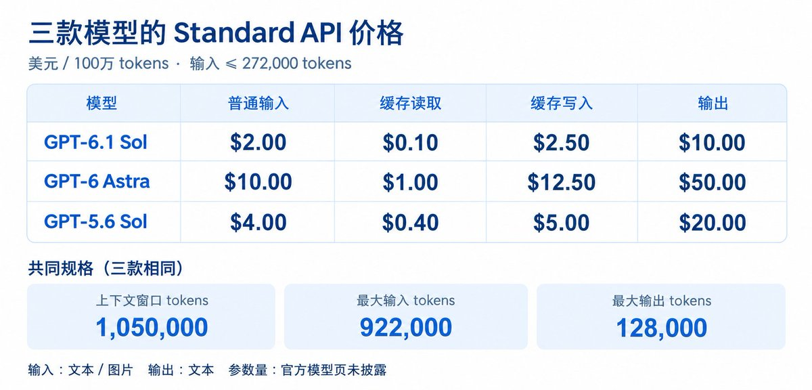
三款模型的 API Standard 单价与容量。订阅用量按套餐计算，不能直接用这张图换算。
图中的“大小”指 API 上下文容量，三款都是 1,050,000 tokens；参数量未公开。容量相同，不代表能力相同，也不代表桌面端每个任务都能用满这一上限。
缓存可以理解为重复使用已经处理过的内容。API 的缓存读取与写入分别计价，写入费不再叠加普通输入费；Codex credits 没有单独的缓存写入费。
如果使用 API，输入超过 272,000 tokens 后，整个请求的输入和缓存单价翻倍，输出单价乘以 1.5；这个数是计费门槛。GPT-5.6 Sol 的优惠价至少持续到 2026 年 11 月 21 日。
它能用来做什么？ 经常让 AI 改网页、处理代码或完成专业任务的人，可以把 GPT-6.1 Sol 作为一个需要实际比较的选择。同样是改网页，调整文案与排查登录问题的难度不同；把目标和验收要求讲清楚，再看结果是否达到要求。
模型、思考强度和速度模式分别选择：模型决定使用哪种能力，思考强度控制推理投入，速度模式影响响应速度与用量消耗。处理复杂问题时，先看完成质量，再决定是否需要加速。
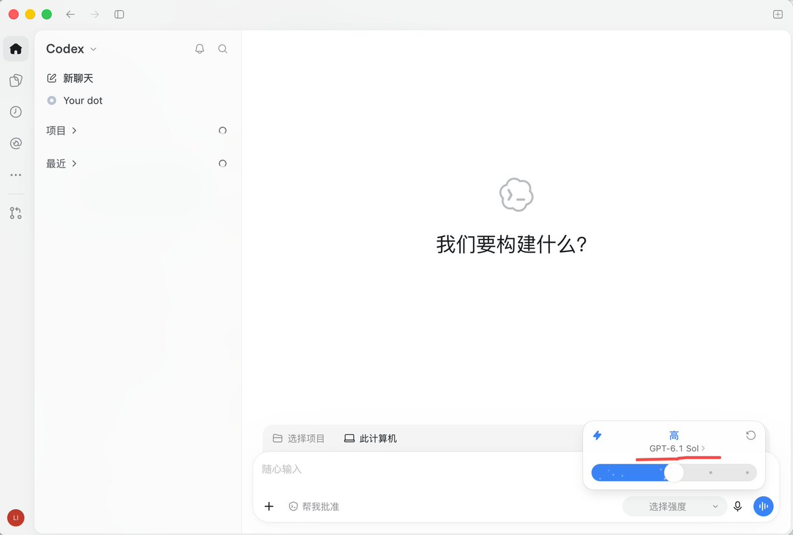
除了 Pro 500，Astra Ultrafast 也向符合条件的 Enterprise、Edu 方案提供。它是 GPT-6 Astra 的速度模式；选择时还要看用量消耗和工作区条件。
2. Space / Pages：把生成结果继续做成可交付的成果
很多人的工作在 AI 回复之后还没有结束。你需要修改措辞、核对来源、整理结构，再把成果交给别人。
Space 把 Pages 和保存的文件放到一起。Page 是可以直接编辑、也可以让 ChatGPT 协助修改的文档；协作者可以按权限查看、评论或编辑。
从操作上说，先打开侧栏的“空间”，点击“新建页面”，填写标题，再把已有初稿粘贴进正文。
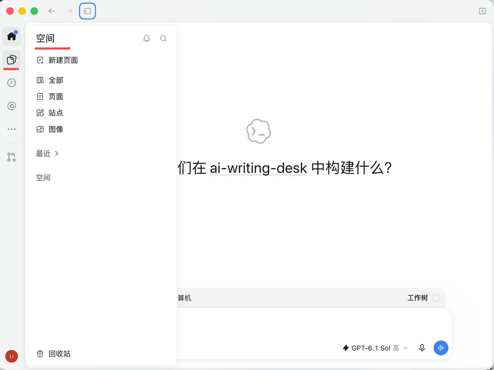
Space 侧栏提供新建页面与查找已有页面的入口。
拿一份产品方案来说，起草只是第一步。你可以在 Page 里直接改一个数字，对选中的段落提出修改要求，在评论中讨论一个待确定的问题。需要 AI 帮忙时，可以在正文或评论里提及 @ChatGPT 或 @dot，请它围绕这份页面继续工作。
要改一段文字，先选中它，打开 Ask for change，写清目标和修改范围。例如：“把选中段落改成三条简短建议，保留原意，只修改选中部分。”
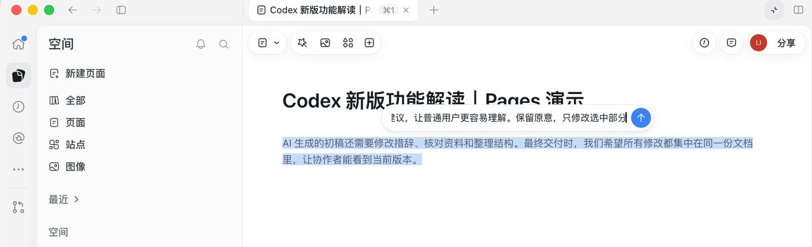
选中原文，输入具体修改要求。
一次起草之后，后续修改可以围绕同一份 Page 进行。 自己改正文、让 AI 调整选中段落、邀请协作者讨论，都放在这份成果里；接受修改后，再检查内容和引用。
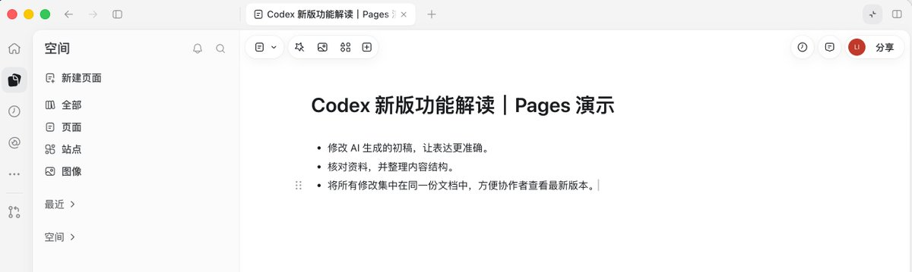
审阅并接受建议后，回到同一份 Page 检查正文。这里的原段落已改成三条建议。
这次值得关注的是成果的组织与协作：Space 收纳相关页面和文件，Pages 承接后续修改与讨论。原有的代码和 Markdown (a simple way to format text with symbols) 编辑仍按自己的方式使用。
首发时，页面的 Keep Updated 尚不可用。想让某份内容定期更新，需要另外设置周期任务，确认日程已保存并启用。
3. Work：云端任务也能调用这台电脑的文件和工具
这次 Work 最值得关注的增强，是合资格的新云端 Work 任务，也能调用这台电脑的文件和工具。
Work：这次增强了什么？
这需要先启用本机访问，再在桌面端选择 Cloud 新建合资格任务；可调用的是已经获准的文件和工具。
具体来说，云端任务可以通过已连接的电脑读取、修改获准的本机文件，也可以调用这台电脑上获准的工具来执行步骤。对普通用户来说，你从网页或手机继续安排同一个任务时，它仍能处理留在那台在线电脑上的原始资料。
比如，一份报价方案保存在电脑里。你先在桌面让 Work 核对内容，出门后从手机打开同一个任务，补充“把这项服务的说明改清楚，其他内容不变”。它可以通过已连接的电脑读取、修改原文件，你回到电脑后再检查保存结果。
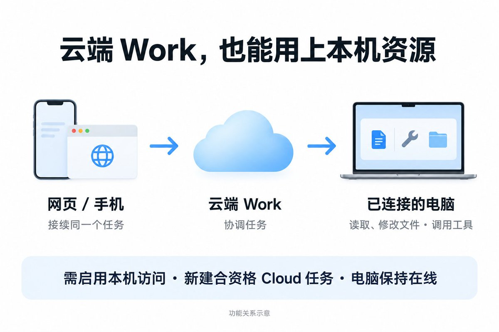
功能关系示意：从网页或手机接续云端 Work，通过已连接的电脑使用获准的本机文件和工具。
离开电脑时，要让需要执行本机步骤的电脑保持在线、连接正常，ChatGPT 桌面应用继续运行，并登录相应账号和工作区。本机访问也需要已开放并获准。电脑离线后，云端可以继续后续一轮中不依赖本机的工作，但不能使用那台电脑的文件和工具。
这项增强适合经常处理本机资料、又需要换设备跟进的人。启用后要新建合资格的 Cloud Work 任务，旧任务保留原来的模式；Codex 的历史会话也仍按自己的方式处理。
4. 可复用云端环境：准备好一次，以后做这个项目接着用
假设你让 Codex 帮你做一个个人网站。开始改页面前，它要先把项目打开、把需要的工具准备好，确认网站能正常运行。这一整套准备，就是这里说的“环境”。
这次的变化，是你可以通过对话让 Codex 帮你准备、检查环境。你确认并发布后，后续新任务就能选择它开始工作。
云端环境：这次改了什么？
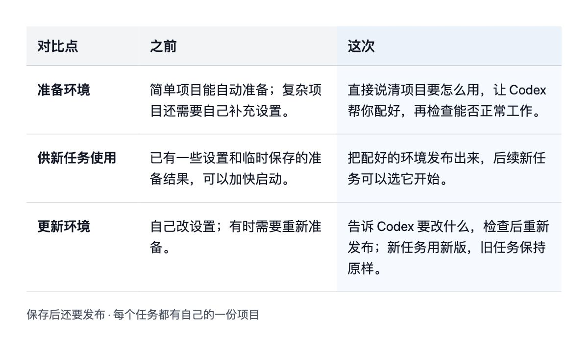
第一次用，从哪里开始？
在新任务里选择“云端”，打开“选择环境”。已有环境可以直接选；第一次使用，可以从“创建环境”进入准备流程，按提示连接 GitHub (a site for storing and sharing code)，选中你的项目。
下面这张图展示的就是这个入口。因为还没有连接 GitHub，界面先提示连接账号；输入框里则填好了想让 Codex 完成的准备要求。
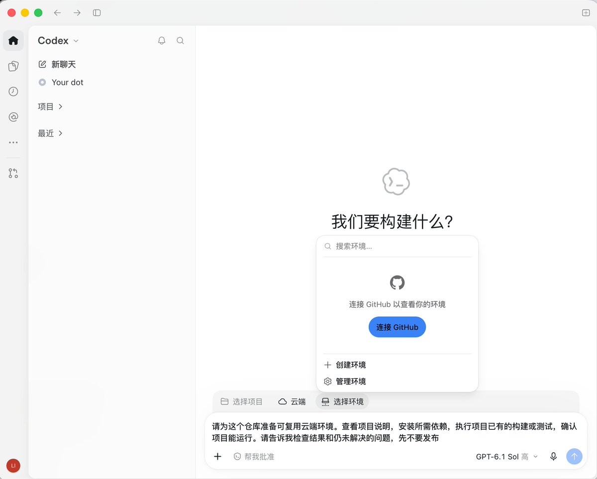
云端环境入口：打开“选择环境”，连接 GitHub 后选择或创建环境。图中填写的是准备要求，尚未展示执行结果。
进入环境准备对话后，不用先研究各种设置，可以把目标讲清楚：
请帮我把这个网站项目准备好，检查它能不能正常运行。缺少什么、还需要我提供什么，请直接告诉我。完成后说明检查结果，先不要发布。
等它准备好，先看结果，再点击发布。 保存只是记下设置；发布后，后续新任务才能用上这份准备结果。以后需要调整，也可以在对话里提出要求，检查后重新发布。已经开始的任务保留自己的进度。
比如，今天准备好个人网站并发布环境，明天新建任务改首页，后天再开一个任务加作品页面，都可以选择同一份环境开始。
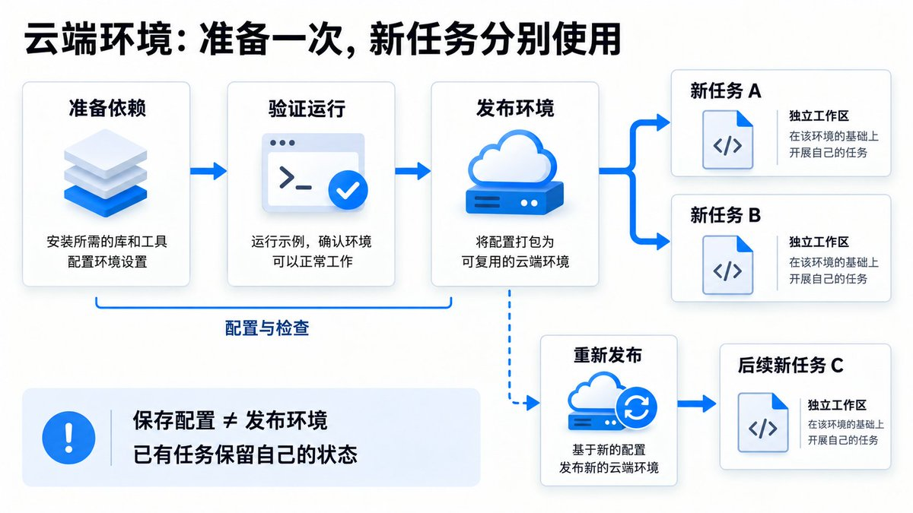
概念示意：准备好并发布环境，供后续新任务分别使用。
每次是同一台云电脑吗？
每个新任务都有独立的工作空间；继续已有任务，会保留那个任务的文件和进度。
比如，任务 A 改首页，任务 B 加作品页：它们都从同一份已发布环境开始，但各有自己的一份项目，A 的修改不会自动出现在 B 里。再次打开任务 A，则继续使用它保存的文件，包括尚未提交的修改和已经安装的工具。
所以，“可复用”指的是准备好的环境，不能理解成所有任务一直共用一台固定云电脑。至于后台是否使用同一台物理机器，官方文档没有作保证。
如果你经常让 Codex 做网站、改应用，这项功能能减少重复准备的麻烦。工作放在云端执行，电脑休眠后也能继续；上一节 Work 使用本机资料和工具的步骤，则仍需要那台电脑在线。
dots 也能用上它：你先创建好 Codex 云端环境，dots 跟进网站时，就可以在里面发起修改任务，再检查结果。
5. dots：把一次次操作，组织成持续跟进的工作
谁能用：个人套餐从 Pro 100（100 美元/月）起，Pro 200、Pro 500 也具备资格。 个人用户需年满 18 岁，位于欧洲经济区、英国、瑞士以外的地区。Business Premium、Enterprise 也在开放范围内；Enterprise 需管理员启用。功能逐步开放，具备资格后仍要等账号出现入口。
你可以交给它一项持续职责，告诉它目标、资料来源，以及哪些步骤可以自行推进。它在对话之间继续工作，保留相关偏好、决定和工作笔记，带回结果，并在需要你判断时联系你。
它有自己的云端电脑与浏览器，也可以使用获准的连接应用。需要本机文件或工具时，仍要连接相应电脑，并让电脑保持在线。它自己的云端电脑用于日常任务；上一节的 Codex 环境，则是你提前为做网站、改应用准备好的工作条件。
先看一次实际使用：帮我找独立开发者案例
我给它的任务很直接：去 X 上找面向海外市场、已有收入线索的独立开发者，看看他们有哪些代表作。
左侧是调研请求和整理出的账号、产品、赚钱方式与收入线索；右侧是 dot 的电脑。它在回复中会标注本人自述与可核验信息，具体线索仍要检查原始来源。
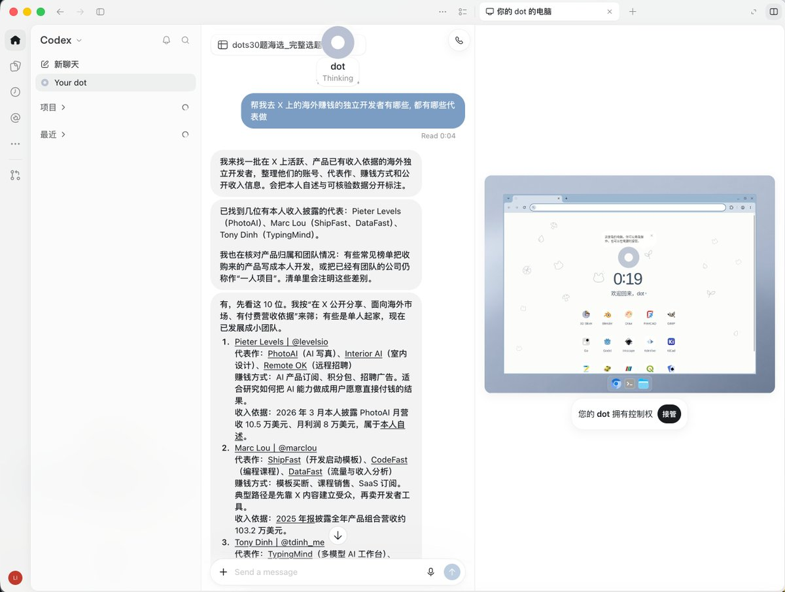
一次独立开发者调研：左侧查看请求与整理结果，右侧打开 dot 的电脑，可看到“接管”入口。
这个界面把对话和 dot 的电脑放在一起：你可以在左侧继续提要求，也可以在右侧查看它的电脑，必要时接管操作。
怎样把一次调研变成持续跟进？
持续任务还需要交代清楚：跟进谁、看哪些来源、发现什么变化时提醒你。 上图展示的是一轮调研，不代表已经设置了周期任务或长期监测。下一步，可以提出这样的职责要求：
持续跟进这份独立开发者名单，使用我确认过的账号和产品官网。关注新产品、定价变化与公开收入披露，保留原始链接和日期，区分本人自述与可核验信息。有值得写成文章的变化时，在 ChatGPT 提醒我；先完成第一轮整理，让我确认名单和来源。
先审阅第一轮结果，再决定跟进范围和节奏。如果希望每周固定汇总一次，还要另设日程，确认已经保存并启用。
前面的新能力，也就有了组合方式：
- 需要改方案时，在 Space 的页面中让 dots 研究或修改。
- 需要安排执行时，dots 可以创建 Work / Codex 任务，检查结果并追加指示。
- 需要做网站、改应用时，让 Codex 任务使用已经准备好的云端环境。
- 需要业务资料时，使用已经安装、启用且获准的插件能力。
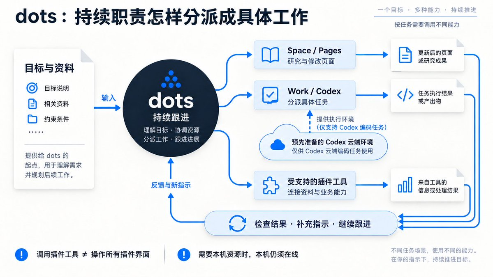
例如，dots 在调研中发现值得写的案例，可以围绕 Page 整理初稿；需要修改网站时，再分派 Codex 任务，使用预先准备好的云端环境。可调用哪些能力，取决于已经连接的应用、权限和环境。
dots 需要讲清的另一半，是怎样管理它。 你可以继续补充信息、改变优先级，在 Activity 查看分派任务的进度和结果。固定时间重复执行的工作，需要保存日程；连接了一个来源，也不代表已经开始监测它。
停止操作也要分别处理：暂停 dots 主任务、停止已分派的任务、取消周期任务，对应不同的工作。需要停下来时，要检查各项状态。
其他更新，按需要了解
Plugin Extensions： 插件可以增加侧栏入口、对话旁的操作面板、文件查看与编辑界面，以及更丰富的表单。支持相应扩展的插件，让你在 ChatGPT 里边聊天、边处理成果；桌面输入框还支持搜索并引用插件内容。具体有哪些入口，取决于插件的实现和账号开放情况。
Codex Security Cloud： 连接 GitHub 仓库，检查代码或持续监测新提交的安全问题，给出发现、验证证据和补丁，审阅后可创建草稿 PR。目前是研究预览，适合维护代码仓库的用户按需了解。
开始使用时，先确认套餐与用量，再选一件手头的事：用 Pages 把初稿改成成果；换设备跟进本机资料，用新 Work；经常做网站，准备一份可复用云端环境；有持续调研或项目跟进需求，再交给已开放的 dots。
参考资料
订阅档位与过渡安排： 官方 Pro 档位与老用户过渡说明、9 月 29 日官方发布记录。
补偿邮件的用户转述（非官方统一公告）： Pro 200 用户公开转述的用量与补偿通知。
版本与发布： 本次发布、9 月 25 日记录、9 月 11 日记录。
模型、价格与缓存： API 官方价格表、GPT-6.1 Sol、GPT-6 Astra、GPT-5.6 Sol、缓存计费说明、Codex credits 口径。
Space / Pages： Space 入门、Pages、在 Space 中使用助手。
Work： Work 跨设备接续、本地访问的前后差异。
可复用云端环境： 新版云端环境、旧版环境、dots 的任务分派。
dots： 认识 dots 与开放条件、任务与记忆 (memory (facts the bot keeps between chats))、电脑与应用。
其他更新： Plugin Extensions、Security Cloud。
Source: https://x.com/0xlangeai/status/2108017762337755604
← 别再急着买API, 用 CLIProxyAPI 盘活你的 AI 订阅 把自己的推文做成个人画像网站, 用 Grok Bot 从分析特点到上线分享保姆级 →